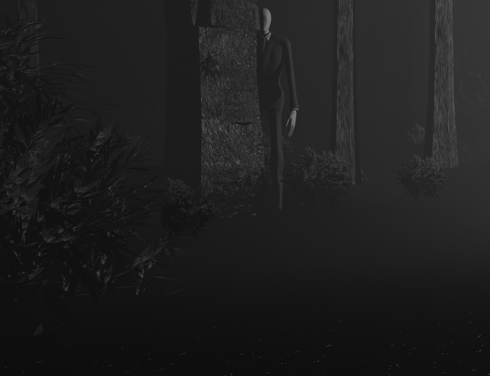
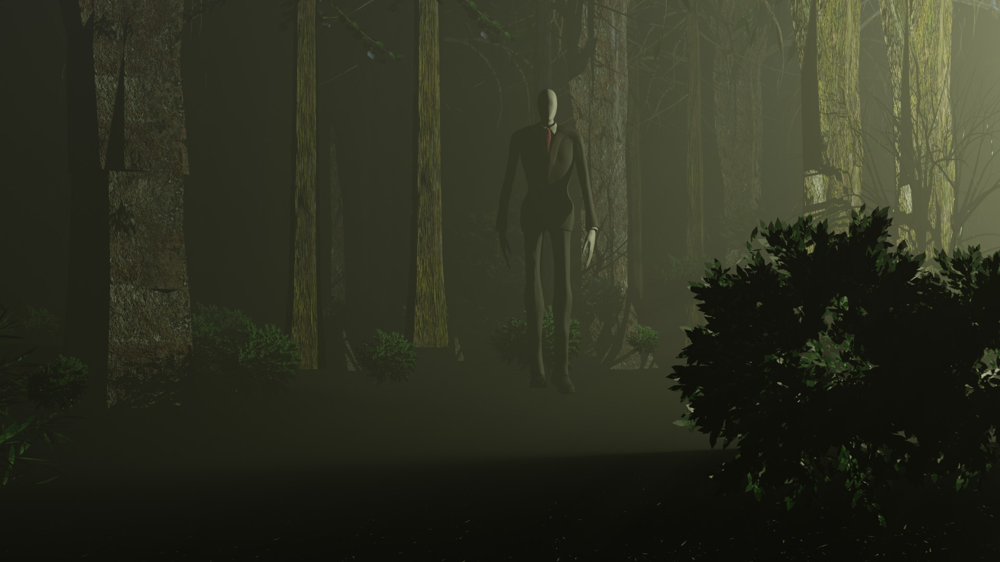
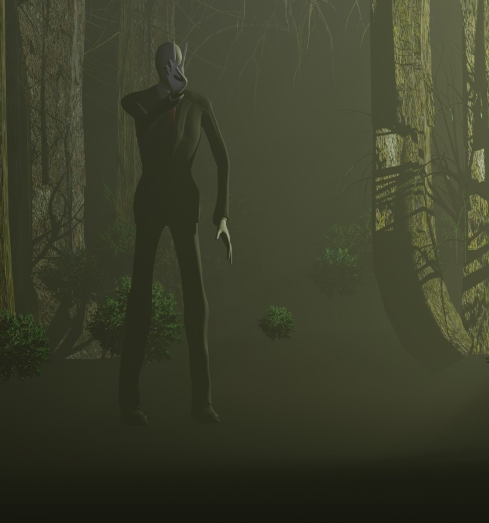
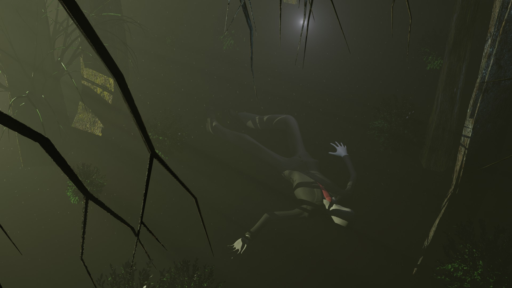
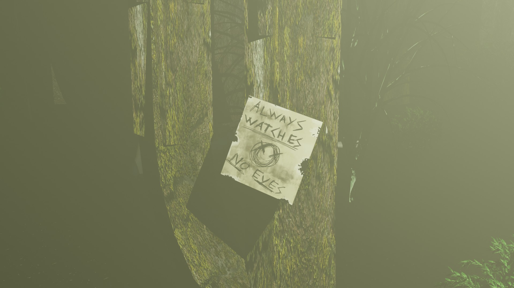

Este documento compila toda a informação recolhida sobre a Anomalia designada "Slender Man". As primeiras manifestações críveis surgiram em 1979, inicialmente descartadas como um fenómeno da internet. No entanto, o aumento exponencial de desaparecimentos e relatos de testemunhas na Mata do Piaget, forçou uma investigação formal. A anomalia é caracterizada pela sua aparência humanoide alta e esguia, ausência de traços faciais e um fato preto formal.
A fotografia a seguir é considerada a primeira evidência pictórica credível, recuperada de uma câmara danificada encontrada na mesma altura.
 Fig. 1.0 - Primeira captura fotográfica confirmada da entidade.A entidade não parece seguir padrões de predação tradicionais. O seu comportamento é primariamente de perseguição psicológica. As vítimas relatam períodos prolongados de perseguição, paranoia severa, insónias e interferência em dispositivos eletrónicos, um sintoma que denominamos de "Síndrome de Slender". O objetivo final destas perseguições parece ser a "recolha" do indivíduo, que nunca mais é visto. Não há sinais de luta nos locais de desaparecimento.
As seguintes imagens foram capturadas por agentes de campo e drones de reconhecimento durante operações na área designada. Demonstram as posturas variadas e a natureza imprevisível da anomalia.
 Fig. 2.1 - Postura observacional passiva. A entidade pode permanecer assim por horas.  Fig. 2.2 - Postura não documentada anteriormente. A intenção é desconhecida. Parece exibir um comportamento quase provocador.  Fig. 2.3 - Imagem de drone que mostra o Slender a dormir.Frequentemente, são encontrados desenhos rudimentares nas áreas de atividade da anomalia. Estes artefactos parecem servir como marcadores territoriais ou como um aviso. O seu significado permanece por decifrar.
 Fig. 3.0 - Um dos oito artefactos recuperados durante a Operação "Pinhal Negro".A Anomalia Slender Man representa uma ameaça de Nível Ómega. A sua capacidade de influenciar a mente humana e de se mover sem ser detetado torna a contenção quase impossível. Todas as operações na Mata do Piaget estão suspensas até nova ordem. A recomendação é o isolamento total da área.
--- FIM DO RELATÓRIO ---